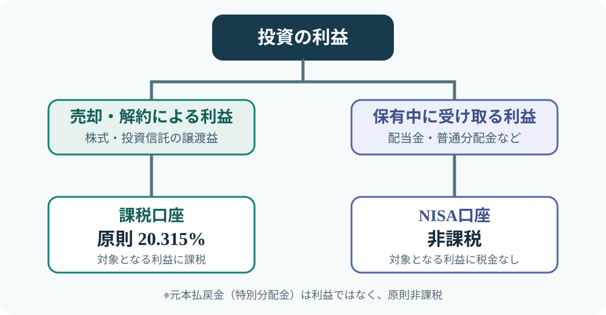

INVESTING / TAX
投資の利益にかかる税金とは？株式・投資信託の税率と口座の違い
株式や投資信託で利益が出ると、売却益や配当・分配金に税金がかかる場合があります。一般的な課税口座では、上場株式等の利益に対する税率は原則20.315%。一方、NISA口座で得た対象利益は非課税です。ただし、口座の種類や利益の受け取り方によって、税金の計算・確定申告・損失の扱いが変わります。
1. 投資で税金がかかる利益
投資に関係する税金を理解するには、まず「何によって利益を得たか」を分ける必要があります。株式や投資信託では、主に売却・解約による利益と、保有中に受け取る配当・分配金があります。

| 利益の種類 | 具体例 | 基本的な扱い |
|---|---|---|
| 売却益・譲渡益 | 株式を買った価格より高く売る。投資信託を購入時より高い基準価額で換金する | 課税口座では、取得費や売買手数料などを差し引いた利益が原則課税対象 |
| 配当金 | 企業が株主へ利益の一部を支払う | 上場株式の配当は、原則20.315%が源泉徴収される。申告方法を選べる場合がある |
| 普通分配金 | 投資信託が運用収益等から支払う分配金のうち、個別元本を上回る部分 | 原則として課税対象。公募株式投資信託等では通常20.315% |
| 元本払戻金（特別分配金） | 投資信託の分配金のうち、個別元本の一部を払い戻す部分 | 利益ではなく元本の払い戻しに当たるため非課税。個別元本はその分だけ減る |
売却益は、売却代金そのものではありません。購入にかかった金額や売買手数料などを差し引いて計算します。投資信託の分配金も、すべてが利益とは限りません。普通分配金と元本払戻金の違いは、投資信託の分配金と再投資の解説で詳しく説明しています。
2. 税率20.315%の内訳と計算例
国内の証券会社を通じて売買する一般的な上場株式等の譲渡益や、上場株式等の配当等に適用される申告分離課税の税率は、原則20.315%です。
| 税金 | 税率 | 説明 |
|---|---|---|
| 所得税 | 15% | 国に納める所得税 |
| 復興特別所得税 | 0.315% | 所得税額の2.1%相当。所得税率15%に対して0.315% |
| 住民税 | 5% | 地方税 |
| 合計 | 20.315% | 15%＋0.315%＋5% |
例えば、株式や投資信託の売却によって課税対象となる利益が10万円だった場合、税額の目安は次のようになります。
| 項目 | 金額 |
|---|---|
| 売却益（税引前） | 100,000円 |
| 税金 | 20,315円 |
| 税引後の利益 | 79,685円 |
これは、利益10万円全体に20.315%を掛けた単純な計算例です。実際の税額は、口座内の損益通算、端数処理、申告方法などによって異なる場合があります。
売却益の計算方法
例えば、株式を50万円で購入し、売却時の手数料等が1,000円、売却代金が60万円だった場合、課税対象となる譲渡益は99,000円です。税率20.315%を単純に掛けると税額は約20,112円、税引後の利益は約78,888円となります。実際には証券会社の年間取引報告書等に記載された金額を確認してください。株式の売買手数料や注文時の価格差については、株式の売買手数料とスプレッドの解説も参考になります。
なお、2027年以降は復興特別所得税に関する制度変更が予定されていますが、国税庁の案内では上場株式等の合計税率は20.315%から変わらないとされています。税率の内訳や適用時期は、取引・申告を行う年の最新の公式資料で確認してください。
3. 特定口座・一般口座の違い
課税口座には「特定口座」と「一般口座」があります。特定口座では証券会社が年間の譲渡損益を計算し、年間取引報告書を作成します。さらに、源泉徴収の有無を選べます。
| 口座の種類 | 税金の計算・徴収 | 確定申告の基本 |
|---|---|---|
| 特定口座（源泉徴収あり） | 証券会社が譲渡損益を計算し、利益が出た場合は原則として税金を源泉徴収 | その口座内の取引だけなら、原則として申告不要を選べる |
| 特定口座（源泉徴収なし） | 証券会社が年間損益を計算し、年間取引報告書を作成するが、税金は源泉徴収しない | 原則として自分で確定申告・納税を行う |
| 一般口座 | 年間損益の計算や必要書類の整理を自分で行う | 原則として自分で譲渡所得等を計算し、必要に応じて確定申告する |
源泉徴収ありなら、必ず申告しなくてよい？
特定口座（源泉徴収あり）では、その口座内で生じた譲渡益について、証券会社が税金を差し引くため、通常は確定申告をしなくても納税が完結します。ただし、別の証券会社・別口座の損失と相殺したい場合や、損失の繰越控除を使いたい場合などは、確定申告が必要です。
また、源泉徴収ありの口座で配当等を受け入れる設定にしている場合、同じ口座内の譲渡損失と配当等が自動的に通算されることがあります。どの配当等が口座内の通算対象になるか、受取方式や証券会社の設定を確認してください。
確定申告をするかは、税金だけで決めない
確定申告をすると、損失を他口座の利益と相殺できるなどの利点がある一方、申告した配当所得などが合計所得金額に含まれ、扶養・各種控除や保険料等の判定に影響する場合があります。申告不要を選べる所得をあえて申告するかどうかは、税額だけでなく他の制度への影響も確認して判断してください。
4. NISA口座なら利益は非課税
NISA口座で取得した対象商品については、売却益や配当・分配金が非課税になります。課税口座で原則20.315%かかる利益も、NISAの非課税対象であれば税金がかかりません。
| 項目 | 課税口座 | NISA口座 |
|---|---|---|
| 対象商品の売却益 | 原則20.315%課税 | 非課税 |
| 対象商品の配当・分配金 | 原則20.315%課税（所得の種類・申告方法による違いあり） | 非課税。ただし上場株式等の配当金等は受取方式に注意 |
| 売却損失 | 一定の条件で損益通算・繰越控除が可能 | 税務上ないものとされ、損益通算・繰越控除は不可 |
例えば、NISA口座で10万円の売却益が出た場合、対象となる取引であれば税金は0円です。課税口座で同じ利益が出た場合の税額目安20,315円との差が、非課税による違いです。
株式の配当金は受取方式に注意
NISA口座で保有する上場株式の配当金や、上場ETF・REITの分配金を非課税にするには、原則として証券会社を通じて受け取る「株式数比例配分方式」を選択する必要があります。銀行口座や配当金領収証で受け取る方式では、NISA口座で保有していても課税される場合があります。投資信託の分配金とは受取方法の扱いが異なるため、商品ごとに確認してください。
NISAの損失は税金の計算に使えない
NISA口座で損失が出ても、課税口座の利益や配当等と相殺することはできません。損失の繰越控除もできません。NISAは利益を非課税にする制度であり、損失を税務上の損失として扱う制度ではないためです。
NISAの年間投資枠や非課税保有限度額、売却後の枠の再利用など制度全体については、新NISAの仕組みと非課税枠の解説を確認してください。
5. 損失が出たときの損益通算と繰越控除
課税口座で上場株式等を売却して損失が出た場合、一定の条件を満たせば、他の上場株式等の利益や配当等と相殺できます。これを損益通算といいます。
損益通算の計算例
同じ年に、課税口座でA株の売却益が15万円、B株の売却損が10万円あったとします。両方が損益通算の対象となる上場株式等の取引なら、差し引きの利益は5万円です。
税率20.315%を単純に掛けると、税額の目安は10,157円（端数処理前）です。損益通算をしない場合のA株の利益15万円に対する税額目安30,472円と比べ、税負担を抑えられます。実際の源泉徴収額・還付額は口座の設定や取引時期、端数処理等で異なります。
損失を翌年以降3年間繰り越せる
その年の損益通算で控除しきれなかった上場株式等の譲渡損失は、確定申告など一定の要件を満たすことで、翌年以後3年間にわたり繰り越せます。翌年以降に生じた上場株式等の譲渡益や、申告分離課税を選択した上場株式等の配当所得等から控除できます。
| 年 | 状況 | 損失の扱い |
|---|---|---|
| 1年目 | 上場株式等の譲渡損失が30万円。通算できる利益・配当等はない | 確定申告を行い、30万円を翌年へ繰り越す |
| 2年目 | 上場株式等の譲渡益が18万円 | 繰越損失18万円を控除。課税対象となる譲渡益は0円、残り12万円を翌年へ |
| 3年目 | 上場株式等の譲渡益が8万円 | 残りの繰越損失から8万円を控除。残り4万円は要件を満たせば翌年へ |
| 4年目 | 上場株式等の譲渡益が5万円 | 残り4万円を控除し、課税対象の譲渡益は1万円 |
繰越控除を受けるには、損失が発生した年に確定申告を行い、その後も損失を繰り越す期間中は、取引がない年を含めて連続して確定申告を行う必要があります。申告を途中でやめると適用できなくなることがあるため、国税庁の手続要件を確認してください。
損益通算できる範囲には決まりがある
- 対象となるのは、原則として金融商品取引業者等を通じた上場株式等の譲渡損失など、税法上の要件を満たす損失です。
- 上場株式等の譲渡損失は、申告分離課税を選択した上場株式等の配当所得等と通算できる場合があります。配当を申告不要または総合課税にした場合は、同じ通算方法を使えません。
- NISA口座の損失は通算・繰越控除の対象外です。
- 一般株式等（非上場株式など）の譲渡損益とは、上場株式等の損失を自由に相殺できるわけではありません。
損益通算や繰越控除を使う場合は、国税庁「上場株式等に係る譲渡損失の損益通算及び繰越控除」で対象範囲と申告要件を確認してください。
6. 配当金・投資信託の分配金の税金
上場株式の配当金
国内上場株式の配当金は、通常、受け取る際に所得税・復興特別所得税15.315%と住民税5%、合計20.315%が源泉徴収されます。確定申告をしない方法のほか、条件に応じて総合課税または申告分離課税を選択できる場合があります。
| 申告方法 | 主な特徴 | 損失との通算 |
|---|---|---|
| 申告不要 | 源泉徴収で納税を完結できる。原則として配当を申告しない | 申告による上場株式等の譲渡損失との通算はできない |
| 総合課税 | 給与など他の所得と合算して税額を計算。一定の国内株式配当では配当控除の対象になり得る | 上場株式等の譲渡損失との通算はできない |
| 申告分離課税 | 他の所得と分けて原則20.315%で計算 | 一定の上場株式等の譲渡損失と通算できる |
どの方法が有利かは、所得水準、配当の種類、配当控除の対象か、損失の有無、扶養や保険料等への影響によって変わります。申告方法を選んだ後に自由に変更できない場合もあるため、税額だけで決めずに確認しましょう。配当金の仕組みや権利確定日については、株式の配当金の仕組みと税金も参考になります。
投資信託の分配金
追加型株式投資信託の分配金には、普通分配金と元本払戻金（特別分配金）があります。普通分配金は利益として課税対象になりますが、元本払戻金は投資した元本の一部が戻るものなので非課税です。元本払戻金を受け取ると、その分だけ個別元本が減少します。
また、投資信託を売却・解約したときの利益は、分配金とは別に譲渡益として計算します。分配金を受け取ったかどうかだけでなく、保有口数・基準価額・個別元本・売却価格を分けて確認することが大切です。
7. 自分の税金を確認する手順
- どの口座で取引したか：NISA、特定口座（源泉徴収あり／なし）、一般口座を確認する。
- 利益の種類は何か：株式・投資信託の売却益、配当金、普通分配金、元本払戻金を区別する。
- 年間取引報告書を確認：特定口座なら証券会社の年間取引報告書で譲渡損益や源泉徴収税額を確認する。
- 他口座に損失がないか：別の証券会社の損失や過去3年の繰越損失があれば、損益通算・繰越控除の対象になるか調べる。
- 申告による影響を確認：配当を申告する場合は、総合課税・申告分離課税・申告不要の違いと、所得控除・扶養・保険料等への影響を確認する。
まとめ
投資の利益にかかる税金は、利益の種類と口座によって扱いが変わります。課税口座での上場株式等の売却益や対象となる配当等は原則20.315%が基本ですが、特定口座（源泉徴収あり）なら通常は証券会社が徴収します。NISAでは対象利益が非課税になる一方、損失を課税口座の利益と相殺できません。
課税口座で損失が出た場合は、対象となる上場株式等の利益や配当等との損益通算、翌年以降3年間の繰越控除を使えることがあります。配当・分配金の申告方法や、確定申告による他制度への影響も含めて、自分の取引内容に合った扱いを確認しましょう。